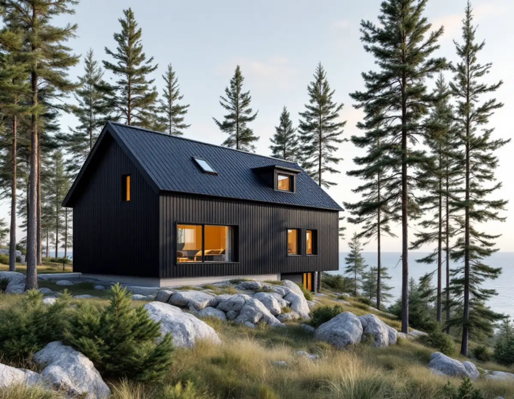
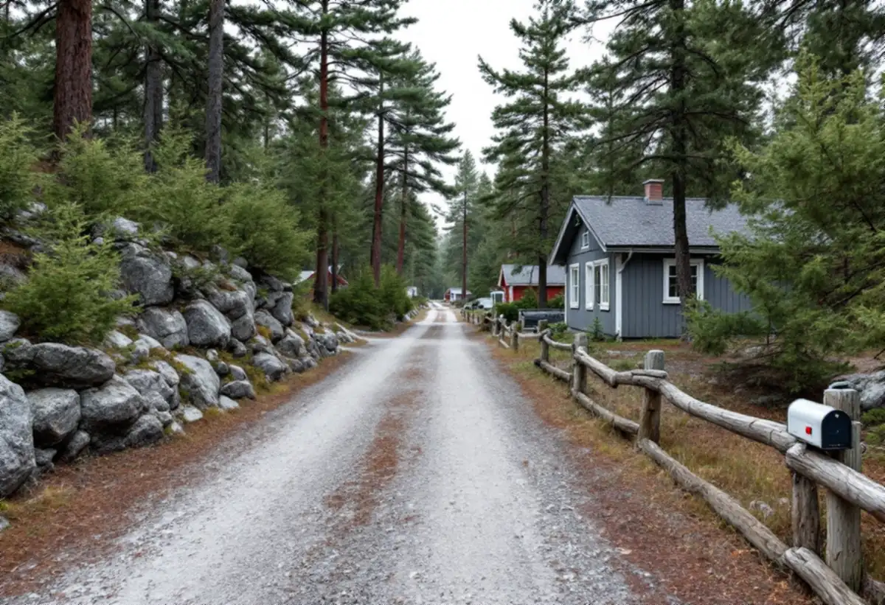

Planläget
Vi tar reda på om tomten ligger i ett PFO-område och var planarbetet står.
På Värmdö hänger frågan om vad du får bygga ofta ihop med var ditt område befinner sig i kommunens planering. I de prioriterade förändringsområdena ses byggrätterna över, och nära vattnet gäller strandskyddet. Geal Entreprenad AB bygger på Värmdö som total entreprenad, och vi börjar med att reda ut vad som gäller för tomten innan något ritas.

Värmdö kommun har många fritidshusområden där allt fler bor permanent, och enligt kommunens broschyr Fritidshusområde i förändring från 2023 handlar det om tusentals fastigheter som ska planläggas och få kommunalt vatten och avlopp. De områden som ska anpassas först kallas prioriterade förändringsområden, PFO, och är utpekade i översiktsplanen Värmdö 2035. Kommunen skriver också att fler permanentboende leder till ökade krav på större byggrätter.
Planprocessen pågår enligt broschyren normalt i två till tre år fram till antagande. När detaljplanen har fått laga kraft och kommunen har byggt ut vatten och avlopp i området kan man söka bygglov och påbörja eventuell fastighetsbildning. För ett husbygge innebär det att idé och skiss kan vara klara långt innan det är möjligt att bygga.

Översiktsplanens riktlinjer för PFO-områdena, som broschyren återger, säger att byggrätterna ska ses över generellt och bedömas utifrån områdets karaktär och förutsättningar. Karaktären ska behållas: sprängning, schakt och stora utfyllnader bör undvikas, nya byggnader ska anpassas efter topografin, omfattande förtätning genom avstyckning bör undvikas och äldre och skyddsvärda träd ska bevaras.
Riktlinjerna säger också att det inom fastigheten ska finnas plats för parkering, ett möjligt attefallshus och bergvärme. Det är värt att tänka på redan när huset placeras, så att tomten inte blir låst av ett hus som hamnar mitt i den.
Ett nytt eller ombyggt hus på en bergig skärgårdstomt bör alltså gå med terrängen. Vi föreslår grundläggning och placering som kräver så lite sprängning som möjligt och som sparar de stora träden. Läs mer om att bygga nytt hus eller om ett attefallshus på tomten.
Strandskyddet gäller enligt Boverket generellt vid hav, insjöar och vattendrag och omfattar normalt 100 meter från strandlinjen, både på land och i vattnet. Länsstyrelsen kan utöka det till upp till 300 meter. Inom strandskyddat område får nya byggnader inte uppföras, och inte heller grävning eller andra förberedelser för dem. Den som vill bygga där, till exempel en komplementbyggnad, behöver dispens, och det kräver ett särskilt skäl enligt miljöbalken.
Värmdö kommun påpekar i sin information om de nya reglerna från den 1 december 2025 att det fortfarande inte är tillåtet att bygga lovfritt inom 100 meter från strand eller närmare tomtgränsen än 4,5 meter. Inom kulturhistoriskt värdefulla områden och riksintressen för kulturmiljövården gäller alltid lovplikt, och kommunens kulturmiljökarta visar om din fastighet berörs. Tidigare lovfria åtgärder som friggebodar, skärmtak och attefallsbyggnader räknas in i de nya möjligheterna.
Som fastighetsägare ansvarar du enligt kommunen för att det som byggs följer lagens krav. Vi kontrollerar strandskydd, kulturmiljö och avstånd innan skissen blir en ritning, och om dispens behövs tar vi fram underlaget till ansökan tillsammans med dig.
I de flesta förändringsområdena föreslås enskilt huvudmannaskap, vilket enligt broschyren innebär att fastighetsägarna genom väg- eller samfällighetsföreningen ansvarar för drift och underhåll av vägar och naturmark. Inom den egna fastigheten är det fastighetsägaren som ska ta hand om dagvattnet. Förbindelsepunkten för vatten och avlopp ligger normalt cirka en halv meter utanför fastighetsgränsen, och ledningarna fram till huset bekostar du själv.
För ett byggprojekt betyder det att tillfart för material, upplag och hårdgjorda ytor behöver planeras med vägarna och dagvattnet i åtanke. Ska ett befintligt fritidshus få nytt badrum när VA kommer, läs mer under badrumsrenovering på Värmdö.
Vi tar reda på om tomten ligger i ett PFO-område och var planarbetet står.
Berg, träd, avstånd till strand och gräns samt tillfarten gås igenom.
Huset placeras efter terrängen och du får ett skriftligt förslag.
Bygglov, anmälan eller strandskyddsdispens tas fram där det krävs.
Vi samordnar grund, stomme, tak och installationer.
Vi går igenom huset med dig och lämnar över handlingarna.
Rotavdraget är 30 procent av arbetskostnaden, högst 50 000 kronor per person och år och högst 75 000 kronor tillsammans med rutavdrag. Det gäller även ett fritidshus som du äger och använder.
Att bygga om ett fritidshus till åretruntbostad, till exempel tilläggsisolera väggar och göra om planlösningen, kan ge avdrag. Ett helt nytt hus ger det aldrig. En tillbyggnad ger avdrag om den sitter ihop med husets yttervägg till minst 75 procent av någon sida eller har en dörr in till huset. Vi drar avdraget på fakturan.
Terrängen och hur mycket berg som måste hanteras, avståndet till förbindelsepunkten, tillfarten för material på smala vägar och om det befintliga huset ska byggas om eller ersättas. Efter ett gratis platsbesök får du ett skriftligt kostnadsförslag.
Total entreprenad för villan.
Byggfirma →Takbyte, takbesiktning och plåtarbeten.
Takläggare på Värmdö →Skärgård, vind och fritidshus.
Takrenovering på Värmdö →Fritidsområden, kulturmiljö och avlopp.
Attefallshus på Värmdö →Brunnsvatten, salt och eget avlopp.
Badrumsrenovering på Värmdö →Röd panel, vita snickerier och båthus i skärgårdsbyarna.
Fasadmålning på Värmdö →Sommarvillor, skyddade hus och helårsboende.
Fasadrenovering på Värmdö →Gustavsbergs bevarandevärda fönster.
Fönsterbyte på Värmdö →Glasverandor och äldre fönster.
Fönsterrenovering på Värmdö →Fritidshus som blir permanentbostäder.
Golvläggare på Värmdö →Gamla brädgolv och skonsam slipning.
Golvslipning på Värmdö →Fritidshus, eget avlopp och Gustavsberg.
Köksrenovering på Värmdö →Skärgårdshus, fritidshus och bruksmiljö på Värmdö.
Målare på Värmdö →Plåttak och beslag på Värmdö.
Plåtslagare på Värmdö →Fritidshus som blir helårshus.
Snickare på Värmdö →Anmälan, kulturmiljö och tak i skärgårdsbyarna.
Takbyte på Värmdö →Riva eller spara tapetlagren.
Tapetsering på Värmdö →Fritidshusplaner och lovfria 30 m².
Tillbyggnad på Värmdö →VVS, varmvattnet och byggreglerna.
Totalrenovering på Värmdö →